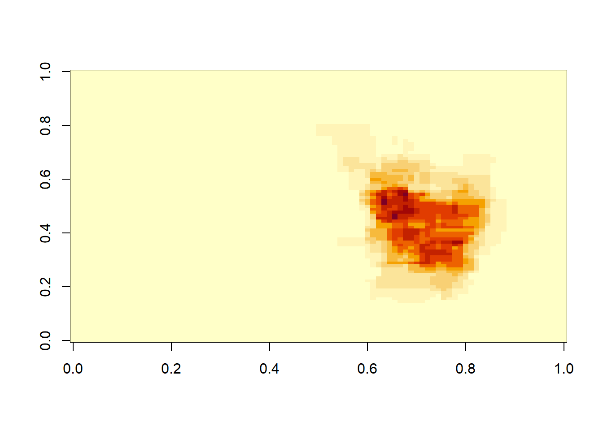

Chapter 3 Data Wrangling
This section deals with the nitty gritty of data analysis. There’s no nice plots like the previous chapter. In fact, this data wrangling is the major aspect of data science. Sometimes, it’s worth spending time on stack overflow to look at similar problems that others have and the approaches to solving them. Useful blogs are available at https://www.r-bloggers.com/.
3.1 Data
This section on atomic vector, arrays, matrix and list is often considered boring and ignored.
3.1.1 Vector, Arrays, Matrix
3.1.1.1 Vector and list
All elements of an atomic vector and arrays are the same. Vector can be numbers, words etc. However, vectors should not be a mixture of words and numbers. List can contain different types of data. A complex example of a structured list is the json format shown below. In base R, c is a function for creating a vector or list. The function list can also be used to create list. It is best to avoid using c when assigning a name to a dataframe or vector (Wickham 2019).
## [1] TRUE## [1] "numeric"## [1] TRUE## [1] "character"## [1] FALSE## [1] "character"## [1] TRUE3.1.1.2 Matrix and Arrays
Arrays are arranged in matrix of rows and columns of a single data type. Later in this chapter, we will illustrate the importance of arrays for manipulating MRI scans. A volumetric mri scan, there are 3 dimenions [,,]. The first column is the sagittal sequence, second column is the coronal sequence and the third column is the axial sequence. In the example below, this knowledge of arrays can be used to reverse the ordering of information on MRI scan (flip on it axis between left and right)
#vector
vector1<-c(1,2,3)
vector2<-c(4,5,6,7,8,9)
array1<-array(c(vector1,vector2),dim = c(3,3,2))
array1## , , 1
##
## [,1] [,2] [,3]
## [1,] 1 4 7
## [2,] 2 5 8
## [3,] 3 6 9
##
## , , 2
##
## [,1] [,2] [,3]
## [1,] 1 4 7
## [2,] 2 5 8
## [3,] 3 6 9## , , 1
##
## [,1] [,2]
## [1,] 1 3
## [2,] 2 4
##
## , , 2
##
## [,1] [,2]
## [1,] 5 7
## [2,] 6 8
##
## , , 3
##
## [,1] [,2]
## [1,] 9 2
## [2,] 1 3## [1] FALSE## [1] TRUEArrays can be accessed by indexing its structure.
## [,1] [,2] [,3]
## [1,] 1 4 7
## [2,] 2 5 8
## [3,] 3 6 9## [,1] [,2] [,3]
## [1,] 1 4 7
## [2,] 2 5 8
## [3,] 3 6 9## [,1] [,2]
## [1,] 5 7
## [2,] 6 8The apply function works on data in array format.
## [1] 24 30 36## [1] 12 30 48## [,1] [,2] [,3]
## [1,] 2 8 14
## [2,] 4 10 16
## [3,] 6 12 183.1.1.3 Data frame
Data frame is a convenient way of formatting data in table format. It is worth checking the structure of data. Some libraries preder to work with data in data frame while others prefer matrix or array structure.
## [1] "1" "2" "3"3.1.1.4 Simple function
a function is written by creating name of function, calling on function (x) and brackets to define function.
## [1] 6This is an example of using loop to remove na. There is an elegant function replace_na within tidyr to perform this task.
# data
x=c(3,2,NA,6,9,NA,NA,5,NA,NA,11)
# vector of missing values
y <- NULL
# find missing value indices
for(i in 1:length(x)){
if(is.na(x[i])==TRUE)
y <- append(y, i)
}
# replace missing values with a random integer between 1 and 5
x.no.na <- replace(x, y, sample(5, length(y), replace = FALSE))
x.no.na## [1] 3 2 1 6 9 2 4 5 3 5 11## [1] 3 2 3 6 9 3 3 5 3 3 113.1.1.5 sapply
The call sapply applies a function to a vector, matrix or list. It returns the results in the form of a matrix.
3.1.1.6 lapply
The call lapply applies a function to a list. The example below creates a list of nifti files which are opened painlessly using lapply call to readNIfTI.
3.2 Data storage
Often one assumes that opening Rstudio is sufficient to locate the file and run the analysis. One way of doing this at the console is to click on Session tab, then Set Working Directory to location of file. Another way of doing this seemlessly is to use the library here. It is easy to find the files in your directory using the list.files() call.One way of storing data in R format is to save the file as .Rda. This format will ensure that no one can accidentally rewrite or delete a number. For very large data, it’s quicker to save as .Rda file than as csv file.
#list all files in a directory
#list.files()
#list files matching pattern
list.files(pattern=".Rmd")## [1] "01-intro.Rmd"
## [2] "02-Data-Wrangling.Rmd"
## [3] "03-Statistics.Rmd"
## [4] "04-multivariate-analysis.Rmd"
## [5] "05-machinelearning.Rmd"
## [6] "06-machinelearningpt2.Rmd"
## [7] "07-Bayesian-analysis.Rmd"
## [8] "08-operational-research.Rmd"
## [9] "09-graph-theory.Rmd"
## [10] "10-geospatial-analysis.Rmd"
## [11] "11-App.Rmd"
## [12] "12-Appendix.Rmd"
## [13] "13-references.Rmd"
## [14] "Applications-of-R-in-Healthcare.Rmd"
## [15] "index.Rmd"3.2.1 Excel data
Excel data are stored as csv, xls and xlsx. Csv files can be open in base R using read.csv function or read_csv using readr library, or fread using data.table. One issue with read.csv is that it converts string to factors and it is advisable to follow up with a statement (stringsAsFactors = FALSE) to avoid this issue. Both read_csv and fread are deemed to be faster for large files. fread convert date to character and requires further conversion using base R or fasttime.
I would urge you to get used to manipulating data in R as the codes serve as a way to keep track with the change in data. The original xcel data should not be touched outside of R.
File<-read.csv("File.csv", stringsAsFactors = FALSE)
File<-readr::read_csv ("File.csv")
File<-data.table::fread("File.csv")
File<-readxl::read_xlsx("File.xlsx",skip=1) #skip first row
File<-readxl::read_xlsx("File.xlsx",sheet=2) #read data from sheet 23.2.1.1 Date and time
Date and time can be handle in base R. The library lubridate is useful for parsing date data. One warning, errors with parsing can occur if there are characters in the column containing date data. It is possible to get an overview of the functions of the library by typing help(package=lubridate).
## Warning: package 'dplyr' was built under R version 3.6.1##
## Attaching package: 'dplyr'## The following objects are masked from 'package:stats':
##
## filter, lag## The following objects are masked from 'package:base':
##
## intersect, setdiff, setequal, uniondfdate<-data.frame("DateofEvent"=c("12/03/2005","12/04/2006",NA),"Result"=c(4,5,6))
class(dfdate$DateofEvent)## [1] "factor"## [1] 12/03/2005 12/04/2006 <NA>
## Levels: 12/03/2005 12/04/2006## DateofEvent Result
## 1 12/03/2005 4
## 2 12/04/2006 5#convert to Date using base R
dfdate$DateofEvent2<-as.POSIXct(dfdate$DateofEvent)
class(dfdate$DateofEvent2)## [1] "POSIXct" "POSIXt"## [1] "0012-03-20 LMT" "0012-04-20 LMT" NAPartitioning date time data to weekend or week day is simple. Below, a simple data frame is created containing Date and Time. A simple check using class call show that the data are factors. The data can be converted to date using as.POSIXct call with base R or ymd or ymd_hms with lubridate. The day of the week can be parsed with wday call. This call wday return a numerical vector of days. Sunday is day 1 and Saturday is day 7.
##
## Attaching package: 'lubridate'## The following object is masked from 'package:base':
##
## datelibrary(dplyr)
#help(package="lubridate")
#create an example for practice
dfw<-data.frame(
Location=c("MMC","Casey","DDH","DDH","MMC"),
Date=c("2020-04-22","2020-04-23","2020-04-24","2020-04-25","2020-04-26"),Time=c("15:33:21","20:32:34","12:12:43","09:40:32","18:23:50"))
dfw1<-dfw %>%
#merge Date Time columns
mutate(DateTime=paste0(Date,Time),
#Date and Time data are factors
DateTime=ymd_hms(DateTime),
#parse day of week
Wday=wday(DateTime),
#return logical value for days 1 and 7
Wkend=(Wday==1 | Wday==7),
#hour returns a value between 0-24
Ohour=hour(DateTime),
#return logical value for time between 8-17
Officehour=(Ohour>=8 & Ohour<=17))3.2.2 Foreign data
The foreign library is traditionally use to handle data from SPSS (.sav), Stata (.dta) and SAS (.sas). One should look at the ending in the file to determine the necessary library.
library(foreign)
#write and read Stata
write.dta(dfdate,file="./Data-Use/dfdate_temp.dta")
a<-read.dta("./Data-Use/dfdate_temp.dta")
aThis dataset is available for download from https://www1.nyc.gov/site/doh/data/data-sets/data-sets-and-tables.page. It contains data on a survey of health status on New Yorkers in 2018. The data is available for download is SAS format. The .sas7bdat is the latest version of SAS and requires this sas7bdat library.
The foreign library can handle older SAS files but not the current version. The current version of SAS file requires sas7bdat. The clue is the file ends in .sas7bdat.
3.2.3 json format
Json is short for JavaScript object Notification. These files have a hierarchical (nested) structured format. The json file is in text format and can also be examined using Notepad. These files can be read using the RJSONIO, rjson or tidyjson libraries in R.
There are 2 sample json files. One is the address book for kommune 0411 in Denmark. The other json data is the hospital bed per 1000 people data is obtained from World Bank at https://data.worldbank.org/indicator/SH.MED.BEDS.ZS.
library(RJSONIO)
j<-fromJSON("./Data-Use/0411.geojson")
j<-lapply(j, function(x) {
x[sapply(x,is.null)]<-NA
unlist(x)
})
k<-as.data.frame(do.call("cbind",j)) #list to data frame
j1<-fromJSON("./Data-Use/WB-Beds/SH.MED.BEDS.json")
j1<-lapply(j1, function(x) {
x[sapply(x,is.null)]<-NA
unlist(x)
})
k1<-as.data.frame(do.call("cbind",j)) #list to data frame##
## Attaching package: 'rjson'## The following objects are masked from 'package:RJSONIO':
##
## fromJSON, toJSONThe tidyjson library contains the world bank data in json format.
## Warning: package 'tidyjson' was built under R version 3.6.3##
## Attaching package: 'tidyjson'## The following object is masked from 'package:dplyr':
##
## bind_rows## The following object is masked from 'package:stats':
##
## filter3.2.4 XML
XML refers to extensible markup language. Extracting XML object to data frame requires conversion to a list and then unlist the document.
library(XML)
library(methods)
#parse data into XML document
result<-xmlParse("./Data-Use/WB-Beds/API_SH.MED.BEDS.ZS_DS2_en_xml_v2_994608.xml")
#explore data structure of xml document
#find number of root node
rootnode <- xmlRoot(result)
rootsize <- xmlSize(rootnode)
#print(rootsize)
#print(rootnode[1])
#create data frame directly-not recommended
Bedsdf<-xmlToDataFrame(result) # 1 15840
#a different way to convert to data frame
Bedsdfdoc <- xmlToDataFrame(nodes = getNodeSet(result, "//record"))
#View(Bedsdfdoc)The XML library is no longer supported.
## Registered S3 method overwritten by 'rvest':
## method from
## read_xml.response xml2## -- Attaching packages ------------------------------------- tidyverse 1.2.1 --## v ggplot2 3.2.1 v readr 1.3.1
## v tibble 3.0.1 v purrr 0.3.2
## v tidyr 1.0.0 v stringr 1.4.0
## v ggplot2 3.2.1 v forcats 0.4.0## Warning: package 'ggplot2' was built under R version 3.6.1## Warning: package 'tibble' was built under R version 3.6.3## Warning: package 'tidyr' was built under R version 3.6.1## -- Conflicts ---------------------------------------- tidyverse_conflicts() --
## x lubridate::as.difftime() masks base::as.difftime()
## x tidyjson::bind_rows() masks dplyr::bind_rows()
## x lubridate::date() masks base::date()
## x tidyjson::filter() masks dplyr::filter(), stats::filter()
## x lubridate::intersect() masks base::intersect()
## x dplyr::lag() masks stats::lag()
## x lubridate::setdiff() masks base::setdiff()
## x lubridate::union() masks base::union()3.2.5 DICOM, nifti and minc format
R can handle a variety of different data format. Medical images are stored as Digital Imaging and Communications in Medicine or DICOM files for handling and converted to Neuroimaging Informatics Technology Initiative or nifti files for analysis. DICOM files have x-axis arranged right to left, y-axis arranged anterior to posterior and z-axis arranged inferior to superior. NIFTI files are adapted from ANALYZE 7.5 format and integrate the seaprate header and image files from ANALYZE format. The workhorses are the oro.dicom and oro.nifti libraries. The package oro.nifti treat nifti as an S4 class object with multiple slots for data type. These slots can be accessed by typing the @ after the handle of the file. The MINC 1.0 refers to Medical Imaging (Network Common Data Format (NetCDF) (Vincent et al. 2016). This file format was developed so that the metadata of the images including processing history can be stored; this was not possible with the ANALYZE format. The current version of MINC 2.0 uses HDF5 (The HDF Group, 1997–2015). This format has a hierarchical structure.
The standard brain template is MNI152. The MNI template was created usinng 152 male right handed 23 year old medical students at MNI (Collins et al. 1994). A high resolution brain known as Big Brain was created on 3T at 20 micrometers (Amunts et al. 2013)
## Warning: package 'oro.nifti' was built under R version 3.6.1## oro.nifti 0.9.1##
## Attaching package: 'oro.nifti'## The following object is masked from 'package:dplyr':
##
## sliceset.seed(1234)
dims = rep(5, 3)
SimArr = array(rnorm(5*5*5), dim = dims)
SimIm = oro.nifti::nifti(SimArr)
print(SimIm)## NIfTI-1 format
## Type : nifti
## Data Type : 2 (UINT8)
## Bits per Pixel : 8
## Slice Code : 0 (Unknown)
## Intent Code : 0 (None)
## Qform Code : 0 (Unknown)
## Sform Code : 0 (Unknown)
## Dimension : 5 x 5 x 5
## Pixel Dimension : 1 x 1 x 1
## Voxel Units : Unknown
## Time Units : Unknown## Registered S3 method overwritten by 'R.oo':
## method from
## throw.default R.methodsS3
## NIfTI-1 format
## Type : nifti
## Data Type : 16 (FLOAT32)
## Bits per Pixel : 32
## Slice Code : 0 (Unknown)
## Intent Code : 0 (None)
## Qform Code : 0 (Unknown)
## Sform Code : 1 (Scanner_Anat)
## Dimension : 91 x 109 x 91
## Pixel Dimension : 2 x 2 x 2
## Voxel Units : mm
## Time Units : sec


3.2.5.1 Manipulating array
The imaging data are stored as arrays within the .Data slot in nifti.
library(oro.nifti)
#extract data as array using @ function
img<-readNIfTI("./Data-Use/mca_notpa.nii.gz", reorient = FALSE)
k<-img@.Data
#channge x orientation to right to left 91*109*91
k1<-k[91:1,,]
image(k1[,,35])
## [1] ".Data" "sizeof_hdr" "data_type" "db_name"
## [5] "extents" "session_error" "regular" "dim_info"
## [9] "dim_" "intent_p1" "intent_p2" "intent_p3"
## [13] "intent_code" "datatype" "bitpix" "slice_start"
## [17] "pixdim" "vox_offset" "scl_slope" "scl_inter"
## [21] "slice_end" "slice_code" "xyzt_units" "cal_max"
## [25] "cal_min" "slice_duration" "toffset" "glmax"
## [29] "glmin" "descrip" "aux_file" "qform_code"
## [33] "sform_code" "quatern_b" "quatern_c" "quatern_d"
## [37] "qoffset_x" "qoffset_y" "qoffset_z" "srow_x"
## [41] "srow_y" "srow_z" "intent_name" "magic"
## [45] "extender" "reoriented"img2@.Data <- k1
#write image to file
#writeNIfTI(img2, "tt")
#unsigned angle between 2 vectors k and k1
Morpho::angle.calc(k,k1)## [1] 1.570771## dim1 dim2 dim3
## 65.74983 53.09204 46.670483.2.5.2 Math operations
## [1] 902629 2## [1] 902629 2## [1] 91 109 182
## [1] 91 109 182## [1] 91 109 91
The MNI brain template is the standard image for registration. It is obtained from 152 mainly right-handed male medical students.
## Warning: package 'neurobase' was built under R version 3.6.1library(aal)#devtools::install_github("muschellij2/aal")
library(MNITemplate) #devtools::install_github("jfortin1/MNITemplate")
img = aal_image()
template = readMNI(res = "2mm")
cut <- 4500
dtemp <- dim(template)
# All of the sections you can label
labs = aal_get_labels()
# Pick the region of the brain you would like to highlight - in this case the hippocamus_L
#hippocampus = labs$index[grep("Hippocampus_L", labs$name)]
#load mca
mca<-readNIfTI("./Data-Use/mca_notpa.nii.gz", reorient = FALSE)
mca2<-(mca>0.05)*mca
mask = remake_img(vec = img %in% mca2, img = img)
### this would be the ``activation'' or surface you want to render
contour3d(template, x=1:dtemp[1], y=1:dtemp[2], z=1:dtemp[3], level = cut, alpha = 0.1, draw = TRUE)
contour3d(mask, level = c(0.5), alpha = c(0.5), add = TRUE, color=c("red") )
### add text
text3d(x=dtemp[1]/2, y=dtemp[2]/2, z = dtemp[3]*0.98, text="Top")
text3d(x=-0.98, y=dtemp[2]/2, z = dtemp[3]/2, text="Right")
#rglwidget()Up to now we have discussed handling of MRI scans. The library for segmenting hemorrhage on CT scan is ichseg (Muschelli et al. 2017). Its use require installation of fsl.
3.2.5.3 tar file
Image files can be large and are often stored as tar files. The tar (tgz file), untar, zip (gz file) and unzip function are from the utils library. The readNIfTI call can open gz file without the need to call unzip function.
colin_1mm<-untar("./Data-Use/colin_1mm.tgz")
colinIm<-readNIfTI("colin_1mm") #1 x 1 x 1
class(colinIm)## [1] "nifti"
## attr(,"package")
## [1] "oro.nifti"
#combining colin and mca map
img2<-(img*1000)+template/10000
neurobase::ortho2(img2,col.y = alpha("red",.3))
## Warning: package 'RNiftyReg' was built under R version 3.6.1##
## Attaching package: 'RNiftyReg'## The following objects are masked from 'package:oro.nifti':
##
## pixdim, pixdim<-## [1] "nifti"
## attr(,"package")
## [1] "oro.nifti"
3.2.5.4 Image registration
There are many different libraries for performing registration.
library(RNiftyReg)
source <- readNifti(system.file("extdata", "epi_t2.nii.gz", package="RNiftyReg"))
target <- readNifti(system.file("extdata", "flash_t1.nii.gz", package="RNiftyReg"))
result <- niftyreg(source, target)
#affine transformation
result$forwardTransforms## [[1]]
## NiftyReg affine matrix:
## 0.99654954672 0.00006395929 -0.01666618139 0.38126888871
## -0.00058156595 1.00101470947 -0.02364275604 0.42281147838
## 0.01961987652 0.01305449661 1.00201129913 -28.21409225464
## 0.00000000000 0.00000000000 0.00000000000 1.000000000003.2.6 Mesh generation
Generate 3D mesh from brain
## Warning: package 'Rvcg' was built under R version 3.6.3library(oro.nifti)
library(rgl)
library(misc3d)
###load image
mca <- readNIfTI("./Data-Use/mca_notpa.nii.gz")
mca2=(mca*1000)
#array
k<-mca2@.Data
### Generate surface
kmesh<-vcgIsosurface(k, threshold = 0.1)
### decimate it
kmesh <- vcgQEdecim(kmesh,edgeLength = 1)## Warning in vcgQEdecim(kmesh, edgeLength = 1): edges already shorter than
## required - nothing to do## reducing it to 1943 faces
## Initial Heap Size 2592
## Result: 858 vertices and 1728 faces.
## Estimated error: 1.63298e-15
## Mean Edge length is 1.06048258318692### smooth it
kmesh <- vcgSmooth(kmesh)
### save it to disk
vcgPlyWrite(kmesh)
shade3d(vcgSmooth(kmesh,"HC",iteration=3),col="pink")
kbp <- vcgBallPivoting(kmesh, radius = 0.0022, clustering = 0.2, angle = pi/2)
shade3d(kbp, col = rainbow(1000), specular = "black")## Warning in shade3d.mesh3d(kbp, col = rainbow(1000), specular = "black"):
## Default coloring for meshes changed in rgl 0.100.13.3 Tidy data
Attention to collection of data is important as it shows the way for performing analysis. In general each row represents an observation (ie patient 1) and each column represents an attribute of that observation (ie patient 1 having CT abdomen). Avoid the temptation to embed 2 types of attributes into a column (avoid patient 1 having CT abdomen positive).
## Var Result
## 1 test positive 5
## 2 test negative 10The above example should be entered this way. This change allows one to group variables by Test status: ‘positive’ or ‘negative’. One can easily perform a t test here (not recommend in this case as the data contains only 2 rows).
## Test Result
## 1 positive 5
## 2 negative 10The below example is about collapsing of column using the base R.
dfa<-data.frame(City=c("Melbourne","Sydney","Adelaide"),State=c("Victoria","NSW","South Australia"))
#collapsing City and State columns and generate new column address
dfa$addresses<-paste0(dfa$City,",", dfa$State) #separate by comma
dfa$addresses2<-paste0(dfa$City,",", dfa$State,", Australia")
dfa## City State addresses
## 1 Melbourne Victoria Melbourne,Victoria
## 2 Sydney NSW Sydney,NSW
## 3 Adelaide South Australia Adelaide,South Australia
## addresses2
## 1 Melbourne,Victoria, Australia
## 2 Sydney,NSW, Australia
## 3 Adelaide,South Australia, AustraliaThis exanple is same as above but uses verbs from tidyr. This is useful for collapsing address for geocoding.
## new_address addresses
## 1 Melbourne,Victoria Melbourne,Victoria
## 2 Sydney,NSW Sydney,NSW
## 3 Adelaide,South Australia Adelaide,South Australia
## addresses2
## 1 Melbourne,Victoria, Australia
## 2 Sydney,NSW, Australia
## 3 Adelaide,South Australia, AustraliaUsing the data above, let’s split the column address
## Warning: Expected 2 pieces. Additional pieces discarded in 1 rows [3].## City State City2 State2
## 1 Melbourne Victoria Melbourne Victoria
## 2 Sydney NSW Sydney NSW
## 3 Adelaide South Australia Adelaide South
## addresses2
## 1 Melbourne,Victoria, Australia
## 2 Sydney,NSW, Australia
## 3 Adelaide,South Australia, Australia3.3.1 Factors
There are several types of factors in R: ordered and not ordered. It is important to pay attention to how factors are coded. Sometimes, male is represented as 1 and female as 0. Sometimes, female is represented as 2. This discussion may seems trivial but a paper had been retracted in a high impact factor journal Jama because of miscoding of the trial assignment 1 and 2 rather than the assignment of 0 and 1. This error led to reversing the results with logistic regression (Aboumatar and Wise 2019). This error led to report that an outpatient management program for chronic obstructive pulmonary disease resulted in fewer admissions. Below is an example which can occur when data is transformed into factor and back to number. Note that the coding goes from 0 and 1 to 2 and 1.
In certain analyses, the libraries prefer to use the dependent or outcome variable as binary coding in numeric format eg logistic regression and random forest. The library e1071 for performing supprt vector machine prefers the outcome variable as factor.
## [1] 1 1 1 1 1 0 1 1 1 0 1 1 0 1 0 1 1 0 1 1 0 0 0 0 1 1 0 0 1 0 1 0 0 0 0
## [36] 0 0 0 0 1 0 0 0 1 0 0 1 0 1 1 0## [1] 1 1 1 1 1 0 1 1 1 0 1 1 0 1 0 1 1 0 1 1 0 0 0 0 1 1 0 0 1 0 1 0 0 0 0
## [36] 0 0 0 0 1 0 0 0 1 0 0 1 0 1 1 0
## Levels: 0 1## [1] 2 2 2 2 2 1 2 2 2 1 2 2 1 2 1 2 2 1 2 2 1 1 1 1 2 2 1 1 2 1 2 1 1 1 1
## [36] 1 1 1 1 2 1 1 1 2 1 1 2 1 2 2 1This illustration describes conversion of a continuous variable into orderly factors.
library(Stat2Data)
data("Leukemia") #treatment of leukemia
#partition Age into 8 ordered factors
Leukemia$AgeCat<-ggplot2::cut_interval(Leukemia$Age, n=8, ordered_result=TRUE)
class(Leukemia$AgeCat)## [1] "ordered" "factor"3.3.2 Multiple files
Merging of files can be done using dplyr to perform inner_join, outer_join, left_join and right_join. Note that this can also be done in base R or using syntax of data.table.
3.3.3 Pivot
A variety of different expressions are used to describe data format such as wide and long formats. In some case the distinction between such formats is not clear. The verbs for performing these operations are pivot_wide, pivot_long. Again data.table uses different verbs such as cast and melt. In general, most regression analyses are performed with data in wide format. In this case each row represents a unique ID. Longitudinal analyses are performed with data in long format. In this format, there are several rows with the same ID. In the next Chapter on Statistics, an example of data generated in wide format and coverted to long format using plyr. Here we will demonstrate the use of tidyr to pivot loner or wider.
The best way to think about how data should be presented is that data is analyzed according to columns not rows. The data below is extracted from CDC COVID website. Details are given below under Web scraping on how this task was performed.
library(dplyr)
library(tidyr)
library(stringr)
usa<-read.csv("./Data-Use/Covid_bystate_Table130420.csv")
# for demonstration we will select 3 columns of interest
usa_long <-usa %>% select(Jurisdiction,NumberCases31.03.20,NumberCases07.04.20) %>% pivot_longer(-Jurisdiction,names_to = "Date",values_to = "Number.Cases")
usa_long$Date <- str_replace(usa_long$Date,"NumberCases","")
head(usa %>%select(Jurisdiction,NumberCases31.03.20,NumberCases07.04.20),6) #data in wide format## Jurisdiction NumberCases31.03.20 NumberCases07.04.20
## 1 Alabama 999 2197
## 2 Alaska 133 213
## 3 Arizona 1289 2575
## 4 Arkansas 560 993
## 5 California 8131 15865
## 6 Colorado 2966 5429## # A tibble: 6 x 3
## Jurisdiction Date Number.Cases
## <fct> <chr> <int>
## 1 Alabama 31.03.20 999
## 2 Alabama 07.04.20 2197
## 3 Alaska 31.03.20 133
## 4 Alaska 07.04.20 213
## 5 Arizona 31.03.20 1289
## 6 Arizona 07.04.20 2575This second illustrates that sometimes the pivot_long call helps to organise data in wide format. This dataset is taken from article in Jama on variations in death in New York.
library(tidyverse)
dfj<-data.frame(
Borough=c("Bronx","Brooklyn","Manhattan","Queens","Staten Island"),
Pop=c(1432132,2582830,1628701,2278906,476179),
Age65=c(12.8,13.9,16.5,15.7,16.2),
White=c(25.1,46.6,59.2,39.6,75.1),
Hispanic=c(56.4,19.1,25.9,28.1,18.7),
Afro.American=c(38.3,33.5,16.9,19.9,11.5),
Asian=c(4.6,13.4,14,27.5,11),
Others=c(36.8,10.4,15.4,17,5.2),
Income=c(38467,61220,85066,69320,82166),
Beds=c(336,214,534,144,234),
COVIDtest=c(4599,2970,2844,3800,5603),
COVIDhosp=c(634,400,331,560,370),
COVIDdeath=c(224,181,122,200,143),
COVIDdeathlab=c(173,132,91,154,117)
) %>%
#reverse prevalence per 100000 to raw
mutate(Age65raw=round(Age65/100*Pop,0),
Bedsraw=round(Beds/100000*Pop,0),
COVIDtestraw=round(COVIDtest/100000*Pop,0),
COVIDhospraw=round(COVIDhosp/100000*Pop,0),
COVIDdeathraw=round(COVIDdeath/100000*Pop),0) %>%
#move all ethnic types under Ethnicity and percentage to Proportion
pivot_longer(names_to = "Ethnicity", values_to = "Proportion",cols=c(White,Afro.American,Asian,Hispanic,Others))3.4 Regular Expressions
Here is a short tutorial on regular expression. We will begin using base R. This section is based on experience trying to clean a data frame containing many words used to describe one disease or one drug.
3.4.1 base R
#create example dataframe
df<-data.frame(
drug=c("valium 1mg","verapamil sr","betaloc zoc","tramadol","valium (diazepam)"),
infection=c("pneumonia","aspiration pneumonia","tracheobronchitis","respiratory tract infection","respiratory.tract.infection"))
df## drug infection
## 1 valium 1mg pneumonia
## 2 verapamil sr aspiration pneumonia
## 3 betaloc zoc tracheobronchitis
## 4 tramadol respiratory tract infection
## 5 valium (diazepam) respiratory.tract.infectionNow that we have a data frame, we can use pattern matching to replace part of phrase. This step can be done simply using gsub command. First create a list so that the computer searches the phrases in the list.
#create list to remove phrase
redun=c("1mg", "zoc", "sr")
pat=paste0("\\b(",paste0(redun,collapse = "|"),")\\b")
df$drug1<-gsub(pat,"",df$drug)
df$drug1## [1] "valium " "verapamil " "betaloc "
## [4] "tramadol" "valium (diazepam)"#create list to remove phrase
redunc1=c("respiratory tract infection", "tracheobronchitis", "aspiration")
pat=paste0("\\b(",paste0(redunc1,collapse = "|"),")\\b")
df$infection1<-gsub(pat,"",df$infection)
df$infection1## [1] "pneumonia" " pneumonia"
## [3] "" ""
## [5] "respiratory.tract.infection"This section deals with meta-characterers. Examples of meta-characters include $ . + * ? ^ () {} []. These meta-characters requires the double back slashes \.
#create list to remove phrase
redun=c("1mg", "zoc", "sr")
pat=paste0("\\b(",paste0(redun, collapse = "|"),")\\b")
df$drug2<-gsub(pat,"",df$drug)
#[a-z] indicates any letter
#[a-z]+ indicates any letter and those that follow the intial letter
df$drug2<-gsub("\\(|[a-z]+\\)","",df$drug2)
df$drug2## [1] "valium " "verapamil " "betaloc " "tramadol" "valium "Back to our data frame df, we want to remove the change the different words accounting for pneumonia.
redunc=c("\\.")
redunc1=c("respiratory tract infection", "tracheobronchitis", "aspiration")
pat=paste0("\\b(",paste0(redunc,collapse = "|"),")\\b")
df$infection2<-gsub(pat," ",df$infection)
pat=paste0("\\b(",paste0(redunc1,collapse = "|"),")\\b")
df$infection2<-gsub(pat," ",df$infection2)
df$infection2## [1] "pneumonia" " pneumonia" " " " " " "3.4.2 stringr
The following examples are taken from excel after conversion from pdf. In the process of conversion errors were introduced in the conversion from pdf to excel.
library(stringr)
#error introduced by double space
a<-c("8396 (7890 to 8920)","6 301 113(6 085 757 to 6 517 308)","4 841 208 (4 533 619 to 5 141 654)","1 407 701 (127 445 922 to 138 273 863)","4 841 208\n(4 533 619 to\n5 141 654)")
b<-str_replace (a, "\\(c.*\\)","")
#this is a complex example to clean and requires several steps. Note that the original data in the list a is now assigned to b.
b<-str_replace(a,"\n","") %>%
str_replace("\\(.*","") %>%
str_replace("\n.*","") %>%
str_replace("\\)","") %>%
str_replace("\\s","") %>%
str_replace("\\s","")%>% as.numeric()
b## [1] 8396 6301113 4841208 1407701 4841208Another example. This time the 2 numbers in the column are separated by a slash sign. Supposed you want to keep the denominator. The first remove the number before the slash sign. The * metacharacter denotes the action occurs at the end.
df.d<-data.frame(seizure.rate=c("59/90", "90/100", "3/23"))
df.d$seizure.number<-str_replace(df.d$seizure.rate,"[0-9]*","")
df.d$seizure.number## [1] "/90" "/100" "/23"Now combine with the next step to remove the slash sign.
#We used [0-9] to denote any number from 0 to 9. For text, one can use [A-Z].
df.d$seizure.number<-str_replace(df.d$seizure.rate,"^[0-9]*","")%>%
str_replace("/","\\")
df.d$seizure.number## [1] "90" "100" "23"Removing the denominator requires a different approach. First remove the last number then the slash sign.
## [1] "59 " "90 " "3 "3.5 PDF to xcel
Sometimes data from public governement sites come in PDF form instead of excel. Conversion from pdf to excel or text can be difficult especially with special character eg Danish. There are several libraries for doing this: pdftables (require API key) and pdftools. The example below uses pdftools. Documentation for pdftools is available at https://docs.ropensci.org/pdftools/. The document is the 2018 Danish Stroke Registry report. The tabulizer package is excellent for converting table data. However, tabulizer package depends on rJava and requires deft handling.
## Warning: package 'pdftools' was built under R version 3.6.1txtDK<-pdf_text("./Data-Use/4669_dap_aarsrapport-2018_24062019final.pdf")
cat(txtDK[17]) #browse data page 13+4 filler pages## 3. Indikatorresultater på lands-, regions- og afdelingsniveau
## Indikator 1a: Andel af patienter med akut apopleksi som indlægges inden for 3 timer
## efter symptomdebut. Standard: = 30%
## Indikator 1b: Andel af patienter med akut apopleksi som indlægges inden for 4,5
## timer efter symptomdebut. Standard: = 40%
## Inden for 3 timer
## Uoplyst Aktuelle år Tidligere år
## Standard Tæller/ antal 2018 2017 2016
## opfyldt nævner (%) % 95% CI % (95% CI) % (95% CI)
## Danmark ja 4730 / 11794 49 (0) 40 (39 - 41) 39 (38-40) 37 (36-38)
## Hovedstaden ja 1502 / 3439 49 (1) 44 (42 - 45) 40 (38-42) 40 (39-42)
## Sjælland ja 760 / 1917 0 (0) 40 (37 - 42) 39 (36-41) 40 (38-43)
## Syddanmark ja 942 / 2433 0 (0) 39 (37 - 41) 39 (37-41) 35 (33-37)
## Midtjylland ja 918 / 2590 0 (0) 35 (34 - 37) 36 (34-38) 35 (33-37)
## Nordjylland ja 577 / 1341 0 (0) 43 (40 - 46) 41 (39-44) 35 (32-37)
## Bopæl uden for Danmark ja 31 / 74 0 (0) 42 (31 - 54) 51 (36-66) 39 (26-53)
## Hovedstaden ja 1502 / 3439 49 (1) 44 (42 - 45) 40 (38-42) 40 (39-42)
## Albertslund ja 17 / 52 0 (0) 33 (20 - 47) 30 (18-44) 43 (27-59)
## Allerød ja 22 / 53 0 (0) 42 (28 - 56) 32 (20-46) 35 (22-50)
## Ballerup ja 43 / 106 0 (0) 41 (31 - 51) 48 (38-58) 40 (31-51)
## Bornholms Regionskommune ja 38 / 98 0 (0) 39 (29 - 49) 28 (19-38) 32 (22-43)
## Brøndby ja 45 / 113 0 (0) 40 (31 - 49) 31 (22-42) 34 (23-47)
## Dragør ja 18 / 43 0 (0) 42 (27 - 58) 47 (30-65) 33 (17-54)
## Egedal ja 45 / 95 0 (0) 47 (37 - 58) 40 (30-52) 48 (37-59)
## Fredensborg ja 36 / 99 0 (0) 36 (27 - 47) 37 (27-47) 43 (33-53)
## Frederiksberg ja 74 / 141 13 (8) 52 (44 - 61) 42 (35-50) 52 (44-61)
## Frederikssund ja 53 / 141 0 (0) 38 (30 - 46) 39 (31-48) 42 (33-51)
## Furesø ja 55 / 110 0 (0) 50 (40 - 60) 56 (44-67) 50 (38-62)
## Gentofte ja 65 / 123 1 (1) 53 (44 - 62) 46 (37-56) 38 (30-47)
## Gladsaxe ja 68 / 129 0 (0) 53 (44 - 62) 48 (38-57) 36 (27-44)
## Glostrup ja 38 / 72 0 (0) 53 (41 - 65) 40 (27-54) 48 (33-63)
## Gribskov ja 46 / 129 0 (0) 36 (27 - 45) 35 (26-44) 36 (28-46)
## Halsnæs ja 45 / 92 0 (0) 49 (38 - 60) 34 (25-45) 34 (25-44)
## Helsingør ja 50 / 129 0 (0) 39 (30 - 48) 32 (24-40) 38 (30-45)
## Herlev ja 25 / 50 0 (0) 50 (36 - 64) 52 (38-65) 33 (22-46)
## Hillerød ja 47 / 121 0 (0) 39 (30 - 48) 39 (30-49) 40 (30-50)
## Hvidovre ja 57 / 135 0 (0) 42 (34 - 51) 38 (29-48) 47 (37-57)
## 13#render page for screen shot
screenshot13<-pdf_render_page("./Data-Use/4669_dap_aarsrapport-2018_24062019final.pdf", page =17)
#take screen shot
png::writePNG(screenshot13, "./Data-Use/Danish-Stroke-page13.png")
#knit screenshot
knitr::include_graphics("./Data-Use/Danish-Stroke-page13.png")
An alternatively dataset is from New York City Health Department of Health and Mental Hygiene available at https://www1.nyc.gov/assets/doh/downloads/pdf/vs/2017sum.pdf. This table is illustrated as the data for life expectanct and age adjusted deathrate is not tidy.
## LIFE EXPECTANCY
## Figure 4. Life Expectancy at Birth by Community District, New York City, 2008-2017
## Life Expectancy at Birth
## Bronx
## Neighborhood Health Action Center
## Parks & Airports
## 75.6 - 79.8
## 79.9 - 81.4 Manhattan
## 81.5 - 83.1
## 83.2 - 84.7
## 84.8 - 86.7
## Queens
## Staten
## Island
## Brooklyn
## See Map of Community Districts and Boroughs, New York City on page 105.
## Source: Bureau of Vital Statistics, based on NYC resident deaths, including New York
## State occurrence, 2008-2017.
## • For 2008-2017, New York City’s life expectancy at birth was highest in Greenwich Village/SOHO (86.7), the Upper East Side
## (86.4), Murray Hill (86.3), Sunnyside/Woodside (86.3) and Elmhurst/Corona (86.3).
## • For 2008-2017, life expectancy at birth was lowest in Brownsville (75.6), Morrisania (76.8), Central Harlem (76.9), the
## Rockaways (76.9), and East Harlem (77.9).
## Life Expectancy at Birth by Community District (CD) of Residence, New York City, 2008-2017
## Life Life Life Life
## CD MANHATTAN CD BRONX CD BROOKLYN CD QUEENS
## Expectancy Expectancy Expectancy Expectancy
## MN01 Battery Park, Tribeca 85.9 BX01 Mott Haven 78.0 BK01 Williamsburg, Greenpoint 82.2 QN01 Astoria, Long Island City 83.6
## MN02 Greenwich Village, SOHO 86.7 BX02 Hunts Point 79.8 BK02 Fort Greene, Brooklyn Heights 81.6 QN02 Sunnyside, Woodside 86.3
## MN03 Lower East Side 83.2 BX03 Morrisania 76.8 BK03 Bedford Stuyvesant 78.0 QN03 Jackson Heights 85.7
## MN04 Chelsea, Clinton 84.1 BX04 Concourse, Highbridge 79.6 BK04 Bushwick 81.1 QN04 Elmhurst, Corona 86.3
## MN05 Midtown Business District 85.6 BX05 University, Morris Heights 80.3 BK05 East New York 79.1 QN05 Ridgewood, Glendale 81.7
## MN06 Murray Hill 86.3 BX06 East Tremont 78.0 BK06 Park Slope 82.0 QN06 Rego Park, Forest Hills 84.9
## MN07 Upper West Side 85.2 BX07 Fordham 79.9 BK07 Sunset Park 83.3 QN07 Flushing 84.7
## MN08 Upper East Side 86.4 BX08 Riverdale 81.3 BK08 Crown Heights North 80.2 QN08 Fresh Meadows, Briarwood 84.4
## MN09 Manhattanville 82.1 BX09 Unionport, Soundview 80.4 BK09 Crown Heights South 82.0 QN09 Woodhaven 83.4
## MN10 Central Harlem 76.9 BX10 Throgs Neck 81.4 BK10 Bay Ridge 83.7 QN10 Howard Beach 81.9
## MN11 East Harlem 77.9 BX11 Pelham Parkway 80.3 BK11 Bensonhurst 84.2 QN11 Bayside 84.9
## MN12 Washington Heights 84.4 BX12 Williamsbridge 81.4 BK12 Borough Park 84.4 QN12 Jamaica, St. Albans 81.1
## BK13 Coney Island 80.6 QN13 Queens Village 83.1
## CD STATEN ISLAND BK14 Flatbush, Midwood 82.6 QN14 The Rockaways 76.9
## SI01 Port Richmond 79.4 BK15 Sheepshead Bay 83.9
## SI02 Willowbrook, South Beach 81.6 BK16 Brownsville 75.6
## SI03 Tottenville 81.3 BK17 East Flatbush 82.8
## BK18 Canarsie 82.1
## 10## NEIGHBORHOOD MORTALITY
## Figure 8. Age-adjusted Death Rates by Community District of Residence, New York City, 2017
## Age-adjusted Death Rate
## Per 100,000 Population Bronx
## Neighborhood Health Action Center
## Parks & Airports
## 627.6 - 809.4 Manhattan
## 550.3 - 627.5
## 471.8 - 550.2
## 406.4 - 471.7
## 311.7 - 406.3 Queens
## Citywide average: 545.7
## Staten
## Island
## Brooklyn
## See Map of Community Districts and Boroughs, New York City on page 105
## Source: Bureau of Vital Statistics, based on events occurring in 2017.
## • In 2017, Brownsville had the highest age-adjusted death rate, at 809.4 deaths per 100,000 population, followed by 800.5 in
## Central Harlem, 738.8 in the Rockaways, 736.5 in Morrisania, and 701.7 in Mott Haven.
## • In 2017, age-adjusted death rates were lowest in Greenwich Village/SOHO at 311.7 deaths per 100,000 population, followed
## by 320.2 in Sunnyside/Woodside, 338.9 in Bayside, 354.4 in Elmhurst/Corona, and 364.0 in the Upper East Side.
## Age-adjusted Death Rates per 100,000 Population by Community District (CD) of Residence,
## New York City, 2017
## Age- Age- Age-
## Age-
## adjusted adjusted adjusted
## CD MANHATTAN CD BRONX CD BROOKLYN CD QUEENS adjusted
## Death Death Death
## Death Rates
## Rates Rates Rates
## MN01 Battery Park, Tribeca 437.3 BX01 Mott Haven 701.7 BK01 Williamsburg, Greenpoint 444.8 QN01 Astoria, Long Island City 471.7
## MN02 Greenwich Village, SOHO 311.7 BX02 Hunts Point 599.2 BK02 Fort Greene, Brooklyn Heights 484.2 QN02 Sunnyside, Woodside 320.2
## MN03 Lower East Side 436.2 BX03 Morrisania 736.5 BK03 Bedford Stuyvesant 627.5 QN03 Jackson Heights 390.4
## MN04 Chelsea, Clinton 383.3 BX04 Concourse, Highbridge 601.5 BK04 Bushwick 579.4 QN04 Elmhurst, Corona 354.4
## MN05 Midtown Business District 368.5 BX05 University, Morris Heights 637.6 BK05 East New York 641.5 QN05 Ridgewood, Glendale 514.4
## MN06 Murray Hill 366.1 BX06 East Tremont 694.4 BK06 Park Slope 516.6 QN06 Rego Park, Forest Hills 414.1
## MN07 Upper West Side 406.3 BX07 Fordham 609.8 BK07 Sunset Park 468.7 QN07 Flushing 390.3
## MN08 Upper East Side 364.0 BX08 Riverdale 557.8 BK08 Crown Heights North 604.3 QN08 Fresh Meadows, Briarwood 406.7
## MN09 Manhattanville 510.9 BX09 Unionport, Soundview 552.9 BK09 Crown Heights South 550.2 QN09 Woodhaven 454.8
## MN10 Central Harlem 800.5 BX10 Throgs Neck 548.6 BK10 Bay Ridge 455.5 QN10 Howard Beach 475.0
## MN11 East Harlem 685.0 BX11 Pelham Parkway 582.6 BK11 Bensonhurst 441.4 QN11 Bayside 338.9
## MN12 Washington Heights 415.3 BX12 Williamsbridge 581.1 BK12 Borough Park 446.3 QN12 Jamaica, St. Albans 508.6
## BK13 Coney Island 646.7 QN13 Queens Village 375.0
## CD STATEN ISLAND BK14 Flatbush, Midwood 524.4 QN14 The Rockaways 738.8
## SI01 Port Richmond 639.8 BK15 Sheepshead Bay 508.2
## SI02 Willowbrook, South Beach 559.3 BK16 Brownsville 809.4
## SI03 Tottenville 621.3 BK17 East Flatbush 529.5
## BK18 Canarsie 546.2
## 123.5.1 Scanned text or picture
Importing data from scanned text will require use of Optical Character Recognition (OCR). The tesseract library provides an R interface for OCR. In the example below, a picture is taken from same CDC website containing mortality data (https://www.cdc.gov/coronavirus/2019-ncov/covid-data/covidview/04102020/nchs-data.html). The screenshot of this website was then cleaned in paint. The data is available in the Data-Use folder.
## Warning: package 'tesseract' was built under R version 3.6.1eng <- tesseract("eng") #english
text <- tesseract::ocr("./Data-Use/Covid_PNG100420.png", engine = eng)
cat(text)## NCHS Mortality Surveillance Data
## Data as of April 9, 2020
## For the Week Ending April 4, 2020 (Week 14)
##
## COVID-19 Deaths Pneumonia Deaths* Influenza Deaths
## Year Week TotalDeaths Number %ofTotal Number %ofTotal Number %of Total
## 2019 40 52,452 0 0 2,703 5.15 16 0.03
## 2019 4) 52,860 0 0 2,770 5.24 16 0.03
## 2019 42 54,129 0 0 2,977 5.50 18 0.03
## 2019 43 53,914 0 0 2,985 5.54 30 0.06
## 2019 44 53,980 0 0 2,908 5.39 31 0.06
## 2019 AS 55,468 0 0 3,063 5.52 31 0.06
## 2019 46 55,684 0 0 3,096 5.56 39 0.07
## 2019 47 55,986 0 0 2,993 5.35 50 0.09
## 2019 48 55,238 0 0 2,976 5.38 65 0.12
## 2019 49 56,990 0 0 3,305 5.80 99 0.17
## 2019 50 57,276 0 0 3,448 6.02 111 0.19
## 2019 51 56,999 0 0 3,345 5.87 125 0.22
## 2019 52 57,956 0 0 3,478 5.99 198 0.34
## 2020 1 58,961 0 0 3,998 6.77 416 0.71
## 2020 2 58,962 0 0 3,995 6.76 450 0.76
## 2020 3 57,371 0 0 3,903 6.78 441 0.77
## 2020 4 56,666 0 0 3,742 6.56 468 0.83
## 2020 5 56,381 0 0 3,617 6.42 452 0.80
## 2020 6 56,713 0 0 3,599 6.35 482 0.85
## 2020 7 55,237 0 0 3,577 6.48 487 0.883.6 Web scraping
The readers may ask why web scraping for healthcare. A pertinent example related to COVID-19 data is provided below. The library rvest is helpful at scraping data from an internet page. The rvest library assumes that web contents have xml document-tree representation. The different options available for web scraping with rvest are available at the website https://rvest.tidyverse.org/reference/. The user can use CSS selectors to scrape content. The library Rselenium is also useful for web scraping. For dynamic web page, the library CasperJS library does a better job especially if the data contain embedded java script.
The library cdccovidview provides access to the CDC website on COVID-19. In the example below, we will try to this manually. Data from CDC website on COVID-19 is downloaded, cleaned and saved in csv format. It is important to pay attention to the data. The first row contains header and is removed. There are several columns with commas. These commas can be removed using the exercises above. Further the data is updated on weekly basis. As such the data needs to be converted into a date time format using lubridate.
##
## Attaching package: 'rvest'## The following object is masked from 'package:purrr':
##
## pluck## The following object is masked from 'package:readr':
##
## guess_encoding## The following object is masked from 'package:XML':
##
## xmllibrary(tidyverse)
#assign handle to web page accessed 12/4/20
cdc<-read_html("https://www.cdc.gov/coronavirus/2019-ncov/covid-data/covidview/04102020/nchs-data.html")#"xml_document" "xml_node"
# scrape all div tags
html_tag <- cdc %>% html_nodes("div")
# scrape header h1 tags
html_list<-html_tag %>% html_nodes("h1") %>% html_text()
#there is only one table on this web page
Table1<- cdc %>% html_node("table") %>% html_table(fill = TRUE)
#Table1 has a header row
Table1<-Table1[-1,]
#The data in the Total Deaths column has a comma
Table1$Total.Deaths<-as.numeric(gsub(",","",Table1$`Total Deaths`))
#now combine the year and week column to Date
Table1$Date<-lubridate::parse_date_time(paste(Table1$Year, Table1$Week, 'Mon', sep="/"),'Y/W/a')
#there are still commas remaining in some columns. This is a useful exercise for the reader. A solution is provided in the next example.
#write.csv(Table1,file="./Data-Use/Covid_Table100420.csv")The next example is from the CDC COVID-19 website. It poses a different challenges as there are several columns with the same names. In this case we will rename the column by index. There are several columns containing commas. Rather than removing column by column we will write a function with lapply to do it over the table. the apply function returns a matrix whereas lapply returns a dataframe. There is one column containing percentage enclosed in a bracket. This can be removed using the example above on metacharacter ie using doule back slash in front of bracket and again at close of bracket.
library(rvest)
library(tidyverse)
cdc<-read_html("https://www.cdc.gov/mmwr/volumes/69/wr/mm6915e4.htm?s_cid=mm6915e4_w") #"xml_document" "xml_node"
# scrape all div tags
html_tag <- cdc %>% html_nodes("div")
# scrape header h1 tags
html_list<-html_tag %>% html_nodes("h1") %>% html_text()
#there is only one table on this web page
Table2<- cdc %>% html_node("table") %>% html_table(fill = TRUE)
#first row is header
names(Table2) <- as.matrix(Table2[1, ])
Table2<-Table2[-c(1:2,55),]#rows 1 and 2 are redundant
#rename the columns by index
names(Table2)[2] <-"NumberCases31.03.20"
names(Table2)[3]<-"CumulativeIncidence31.03.20"
names(Table2)[4]<-"NumberCases07.04.20"
names(Table2)[5]<-"NumberDeath07.04.20"
names(Table2)[6]<-"CumulativeIncidence07.04.20"
#rather than removing column by column we will write a function with lapply to remove commas over the table. the apply function returns a matrix whereas lapply returns a dataframe.
Table2<-as.data.frame(lapply(Table2, function(y) gsub(",", "", y)))
Table2<-as.data.frame(lapply(Table2, function(x)
gsub("\\(|[0-9]+\\)","",x)))
#write.csv(Table2,file="./Data-Use/Covid_bystate_Table130420.csv")The script above can be used to extract data from any open access article from medical journals. It does not work if the article has not provided full access. For example full access articles from Stroke or Circulation can easily be accessed except more recent articles.
Reference a figure by its code chunk label with the fig: prefix, e.g., see Figure ??. Similarly, you can reference tables generated from knitr::kable(), e.g., see Table 3.1.
| drug | infection | drug1 | infection1 | drug2 | infection2 |
|---|---|---|---|---|---|
| valium 1mg | pneumonia | valium | pneumonia | valium | pneumonia |
| verapamil sr | aspiration pneumonia | verapamil | pneumonia | verapamil | pneumonia |
| betaloc zoc | tracheobronchitis | betaloc | betaloc | ||
| tramadol | respiratory tract infection | tramadol | tramadol | ||
| valium (diazepam) | respiratory.tract.infection | valium (diazepam) | respiratory.tract.infection | valium |
| Jurisdiction | NumberCases31.03.20 | CumulativeIncidence31.03.20 | NumberCases07.04.20 | NumberDeath07.04.20 | CumulativeIncidence07.04.20 | Absolute.change.in.cumulative.incidence. |
|---|---|---|---|---|---|---|
| Alabama | 999 | 20.4 | 2197 | 39 1. | 44.9 | 24.5 |
| Alaska | 133 | 18.0 | 213 | 6 2. | 28.9 | 10.8 |
| Arizona | 1289 | 18.0 | 2575 | 73 2. | 35.9 | 17.9 |
| Arkansas | 560 | 18.6 | 993 | 18 1. | 32.9 | 14.4 |
| California | 8131 | 20.6 | 15865 | 374 2. | 40.1 | 19.6 |
| Colorado | 2966 | 52.1 | 5429 | 179 3. | 95.3 | 43.2 |
| Connecticut | 3128 | 87.6 | 7781 | 277 3. | 217.8 | 130.2 |
| Delaware | 319 | 33.0 | 928 | 16 1. | 95.9 | 63.0 |
| District of Columbia | 495 | 70.5 | 1211 | 24 2. | 172.4 | 101.9 |
| Florida | 6490 | 30.5 | 14302 | 296 2. | 67.1 | 36.7 |
| Georgia | 4585 | 43.6 | 9713 | 351 3. | 92.3 | 48.7 |
| Hawaii | 185 | 13.0 | 362 | 5 1. | 25.5 | 12.5 |
| Idaho | 525 | 29.9 | 1210 | 15 1. | 69.0 | 39.0 |
| Illinois | 5994 | 47.0 | 13549 | 380 2. | 106.3 | 59.3 |
| Indiana | 2159 | 32.3 | 5507 | 173 3. | 82.3 | 50.0 |
| Iowa | 497 | 15.7 | 1048 | 26 2. | 33.2 | 17.5 |
| Kansas | 428 | 14.7 | 900 | 27 3. | 30.9 | 16.2 |
| Kentucky | 591 | 13.2 | 1149 | 65 5. | 25.7 | 12.5 |
| Louisiana | 5237 | 112.4 | 16284 | 582 3. | 349.4 | 237.1 |
| Maine | 303 | 22.6 | 519 | 12 2. | 38.8 | 16.1 |
| Maryland | 1660 | 27.5 | 5529 | 124 2. | 91.5 | 64.0 |
| Massachusetts | 6620 | 95.9 | 15202 | 356 2. | 220.3 | 124.3 |
| Michigan | 7615 | 76.2 | 18970 | 845 4. | 189.8 | 113.6 |
| Minnesota | 689 | 12.3 | 1154 | 39 3. | 20.6 | 8.3 |
| Mississippi | 1073 | 35.9 | 2003 | 67 3. | 67.1 | 31.1 |
| Missouri | 1327 | 21.7 | 3037 | 53 1. | 49.6 | 27.9 |
| Montana | 203 | 19.1 | 332 | 6 1. | 31.3 | 12.1 |
| Nebraska | 177 | 9.2 | 478 | 10 2. | 24.8 | 15.6 |
| Nevada | 1113 | 36.7 | 2087 | 71 3. | 68.8 | 32.1 |
| New Hampshire | 367 | 27.1 | 747 | 13 1. | 55.1 | 28.0 |
| New Jersey | 18696 | 209.9 | 44416 | 1232 2. | 498.6 | 288.7 |
| New Mexico | 315 | 15.0 | 794 | 13 1. | 37.9 | 22.9 |
| New York† | 32656 | 293.1 | 61897 | 1378 2. | 555.5 | 262.4 |
| New York City | 41771 | 497.3 | 76876 | 4111 5. | 915.3 | 418.0 |
| North Carolina | 1584 | 15.3 | 3221 | 46 1. | 31.0 | 15.8 |
| North Dakota | 126 | 16.6 | 237 | 4 1. | 31.2 | 14.6 |
| Ohio | 2199 | 18.8 | 4782 | 167 3. | 40.9 | 22.1 |
| Oklahoma | 565 | 14.3 | 1472 | 67 4. | 37.3 | 23.0 |
| Oregon | 690 | 16.5 | 1181 | 33 2. | 28.2 | 11.7 |
| Pennsylvania | 4843 | 37.8 | 14559 | 240 1. | 113.7 | 75.9 |
| Rhode Island | 520 | 49.2 | 1414 | 30 2. | 133.7 | 84.6 |
| South Carolina | 1083 | 21.3 | 2417 | 51 2. | 47.5 | 26.2 |
| South Dakota | 108 | 12.2 | 320 | 6 1. | 36.3 | 24.0 |
| Tennessee | 2239 | 33.1 | 4139 | 72 1. | 61.1 | 28.1 |
| Texas | 3266 | 11.4 | 8262 | 154 1. | 28.8 | 17.4 |
| Utah | 934 | 29.5 | 1804 | 13 0. | 57.1 | 27.5 |
| Vermont | 293 | 46.8 | 575 | 23 4. | 91.8 | 45.0 |
| Virginia | 1484 | 17.4 | 3645 | 75 2. | 42.8 | 25.4 |
| Washington | 4896 | 65.0 | 8682 | 394 4. | 115.2 | 50.2 |
| West Virginia | 162 | 9.0 | 412 | 4 1. | 22.8 | 13.8 |
| Wisconsin | 1351 | 23.2 | 2578 | 92 3. | 44.3 | 21.1 |
| Wyoming | 120 | 20.8 | 221 | 0 —) | 38.3 | 17.5 |
| American Samoa | 0 | 0.0 | 0 | 0 —) | 0.0 | 0.0 |
| Federated States of Micronesia | 0 | 0.0 | 0 | 0 —) | 0.0 | 0.0 |
| Guam | 71 | 42.8 | 122 | 4 3. | 73.6 | 30.8 |
| Marshall Islands | 0 | 0.0 | 0 | 0 —) | 0.0 | 0.0 |
| Northern Mariana Islands | 2 | 3.5 | 8 | 2 25. | 14.1 | 10.5 |
| Palau | 0 | 0.0 | 0 | 0 —) | 0.0 | 0.0 |
| Puerto Rico | 239 | 7.5 | 573 | 23 4. | 17.9 | 10.5 |
| U.S. Virgin Islands | 30 | 28.0 | 45 | 1 2. | 42.1 | 14.0 |
| U.S. Total | 186101 | 56.2 | 395926 | 12757 3. | 119.6 | 63.4 |
References
Aboumatar, H., and R. A. Wise. 2019. “Notice of Retraction. Aboumatar et al. Effect of a Program Combining Transitional Care and Long-term Self-management Support on Outcomes of Hospitalized Patients With Chronic Obstructive Pulmonary Disease: A Randomized Clinical Trial. JAMA. 2018;320(22):2335-2343.” JAMA 322 (14): 1417–8.
Amunts, Katrin, Claude Lepage, Louis Borgeat, Hartmut Mohlberg, Timo Dickscheid, Marc-Étienne Rousseau, Sebastian Bludau, et al. 2013. “BigBrain: An Ultrahigh-Resolution 3D Human Brain Model.” Science 340 (6139): 1472–5. https://doi.org/10.1126/science.1235381.
Collins, D. L., P. Neelin, T. M. Peters, and A. C. Evans. 1994. “Automatic 3D intersubject registration of MR volumetric data in standardized Talairach space.” J Comput Assist Tomogr 18 (2): 192–205.
Muschelli, John, Elizabeth M Sweeney, Natalie L Ullman, Paul Vespa, Daniel F Hanley, and Ciprian M Crainiceanu. 2017. “PItcHPERFeCT: Primary Intracranial Hemorrhage Probability Estimation Using Random Forests on CT.” NeuroImage: Clinical 14: 379–90.
Vincent, Robert D., Peter Neelin, Najmeh Khalili-Mahani, Andrew L. Janke, Vladimir S. Fonov, Steven M. Robbins, Leila Baghdadi, et al. 2016. “MINC 2.0: A Flexible Format for Multi-Modal Images.” Frontiers in Neuroinformatics 10: 35. https://doi.org/10.3389/fninf.2016.00035.
Wickham, Hadley. 2019. 2nd ed. Chapman & Hall/Crc the R Series. Chapman; Hall/CRC; 2 edition (May 30, 2019).